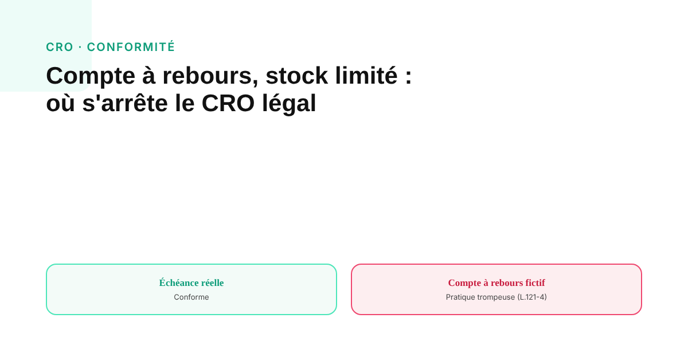
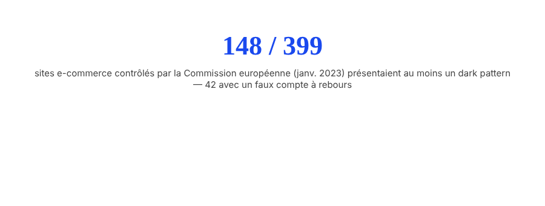

Compte à rebours, stock limité : où s'arrête le CRO légal en e-commerce
Un compte à rebours qui ne correspond à aucune échéance réelle n'est pas qu'une question de bonnes pratiques marketing : c'est une pratique commerciale trompeuse, sanctionnée comme telle en droit français et européen. La ligne entre urgence légitime et dark pattern est plus nette qu'on ne le pense.

Compte à rebours, bandeau « il ne reste que 2 exemplaires », bannière « 14 personnes consultent cette offre » : ces mécaniques d'urgence et de preuve sociale sont omniprésentes en e-commerce. Beaucoup de contenus qui en parlent les traitent comme une question de goût ou d'éthique marketing. C'est en partie inexact : une partie de ces pratiques est directement encadrée par le droit de la consommation, français et européen, avec des sanctions prévues.
Ce que dit précisément la loi
La directive européenne sur les pratiques commerciales déloyales liste explicitement, dans son annexe I, le fait d'affirmer faussement qu'un produit n'est disponible que pour une durée très limitée afin de pousser le consommateur à une décision immédiate, sans lui laisser le temps de comparer. En droit français, l'article L.121-4 du Code de la consommation reprend cette logique et qualifie la « fausse urgence à l'achat » de pratique réputée trompeuse de plein droit : il n'est pas nécessaire de prouver une intention de tromper, la pratique elle-même suffit à caractériser l'infraction. Les sanctions prévues à l'article L.132-2 vont jusqu'à deux ans d'emprisonnement et 300 000 € d'amende pour une personne physique, 1,5 million d'euros pour une société, avec une aggravation spécifique pour les pratiques en ligne depuis la loi du 10 mai 2024.
Un contrôle européen qui a objectivé le problème
En janvier 2023, la Commission européenne et les autorités de protection des consommateurs de 23 États membres ont mené un contrôle coordonné sur 399 sites e-commerce : 148 présentaient au moins un dark pattern, et 42 utilisaient spécifiquement un faux compte à rebours assorti d'une échéance qui ne correspondait à rien de réel. Ce n'est pas une estimation marketing : c'est un contrôle officiel, mené par les régulateurs eux-mêmes, qui objective l'ampleur de la pratique à l'échelle européenne.

La ligne de conformité, en pratique
Aucun test juridique nommé ne sépare « urgence acceptable » et « dark pattern » en dehors du cadre général des pratiques trompeuses : le principe reste le même, qu'il s'agisse d'un délai ou d'un stock. Un compte à rebours qui reflète une vraie date de fin de promotion, un vrai niveau de stock réellement limité, est conforme : la donnée correspond à un fait vérifiable. Un compte à rebours fabriqué, qui se réinitialise aux mêmes conditions à chaque visite, ou un chiffre de stock qui ne reflète pas l'inventaire réel, constitue une infraction — indépendamment du fait que la tactique ait ou non effectivement déclenché la vente. C'est l'allégation fausse elle-même qui est sanctionnée, pas son efficacité commerciale.
Même logique pour la preuve sociale
Les bandeaux « X personnes regardent cette offre » ou les compteurs d'achats récents relèvent de la même famille de pratiques : une allégation de fait sur un comportement réel de consommateurs. Un chiffre authentique, basé sur une donnée de trafic ou de vente réelle, constitue une preuve sociale légitime et généralement efficace. Un chiffre généré artificiellement pour créer une impression de popularité inexistante retombe sous le même cadre légal que le faux compte à rebours : une allégation de fait inexacte destinée à influencer une décision d'achat.
Pourquoi la version honnête reste la plus solide, même sans la contrainte légale
Au-delà du risque juridique, la distinction a un intérêt pratique direct : un signal authentique (avis clients réels, compteur de ventes réel) construit une confiance qui tient dans le temps. Un signal fabriqué, une fois repéré — et les visiteurs le repèrent, notamment quand un compte à rebours se réinitialise à l'identique après rechargement de la page — détruit la confiance accumulée, pas seulement sur cette page, mais sur l'ensemble du site. Le choix entre urgence réelle et urgence fabriquée n'est donc pas qu'une question de conformité : c'est aussi un choix qui détermine si le CRO construit une relation durable avec le visiteur, ou l'épuise au premier soupçon de manipulation.
FAQ
Un compte à rebours sur une page produit est-il illégal ?
Pas en soi. Ce qui est sanctionné en droit français (article L.121-4 du Code de la consommation) et européen (directive sur les pratiques commerciales déloyales), c'est un compte à rebours qui ne correspond à aucune échéance réelle, ou qui se réinitialise aux mêmes conditions. Un compte à rebours lié à une vraie date de fin de promotion n'est pas concerné.
Afficher un nombre de visiteurs ou d'acheteurs fictif est-il risqué juridiquement ?
Oui, de la même famille de pratiques trompeuses que le faux compte à rebours : une allégation de fait inexacte sur la demande ou l'intérêt réel pour un produit relève du même cadre légal que la fausse urgence d'achat, qu'elle porte sur le temps ou sur le stock disponible.
La Commission européenne a-t-elle déjà sanctionné ce type de pratique ?
Un contrôle coordonné mené en janvier 2023 par la Commission européenne et les autorités de 23 États membres a examiné 399 sites e-commerce : 148 présentaient au moins un dark pattern, et 42 utilisaient spécifiquement de faux comptes à rebours assortis d'une échéance non réelle.
Envie d'un audit CRO qui reste dans les clous sur le plan légal ?
Pour aller plus loin, voir la page CRO, et l'article Trust signals : ce qui rassure vraiment un visiteur avant l'achat.
Pour continuer sur ce sujet.